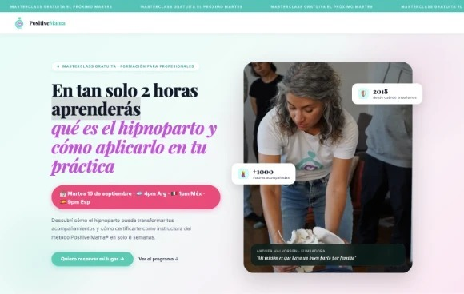

En producciónWebMeta AdsHecho para Genuine Reach
Un programa online con una landing que vende y campañas en dos países
Punto de partida: un programa de hipnoparto (RE-NACER, de Positive Mama) que necesitaba una página de venta clara y anuncios que trajeran mujeres interesadas.
Qué hicimos: armamos la landing de venta completa y las campañas de Meta: conjuntos de anuncios y anuncios, en Argentina y México.
2 paísesCampañas gestionadas en Argentina y México
Ver sitio →
